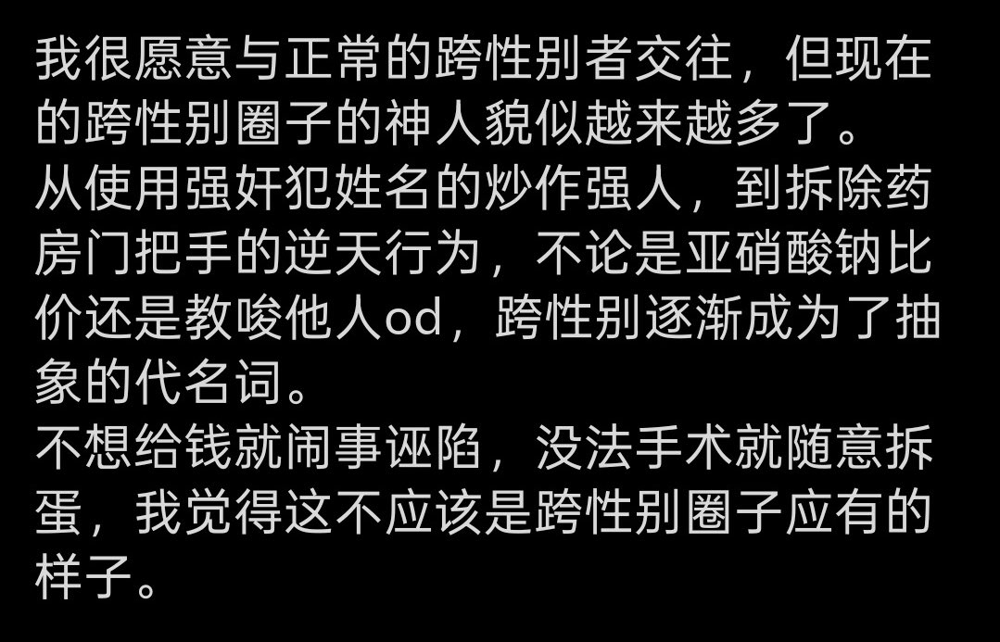

🍀🍥竹蜻蜓🍥🍀
@zqtlovekris99
@CldGeo 你要发表观点必定会被激跨骂，你看看我就是活生生的例子，我骂某些逆天mtf，他们说我骂mtf所以我反跨所以我是terf，进步逼的友跨就是必须无条件包容所有自称跨性别者的所有行为，否则你就是反跨🤣👉

九鸟
@CldGeo
没错，这就是我发的，删帖是因为怕某些人。挨打就要立正。骂我傻逼也好说我发梗图为什么被讨厌也罢，我允许任何人继续讨论。
我本意是反对逆天行为，不是反对整个跨圈。我当然支持正常跨，也和ta们有交往，所以别歪曲我意思说我反跨。
之前发的我还避嫌一下不指名道姓，现在我不演了，神人别污染跨圈😅 https://t.co/FqBDinXfiY